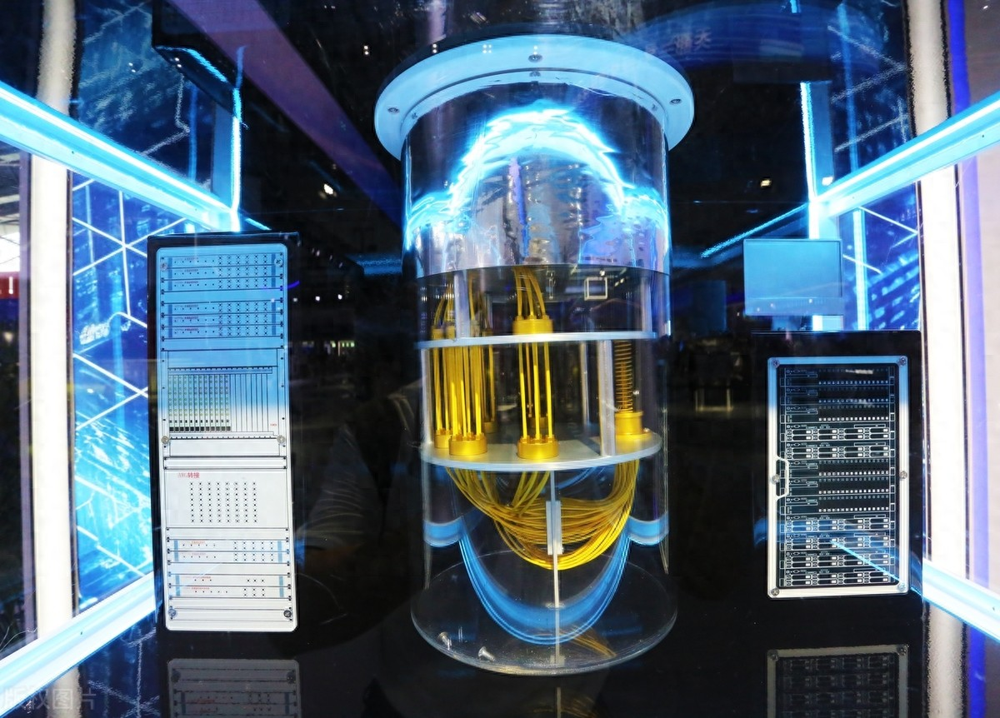

明日科技
索未来科技，传递创新力量
今日要闻
量子计算机取得突破性进展
中国自主量子计算机“本源悟空”全球首次运行十亿级AI微调大模型，标志着国内已经开始通过经典混合框架，将大模型参数优化转化为量子退火问题，实现量子计算机对AI大模型任务的协助，将有助于国产AI大模型的技术落地。同时，由于量子计算机的算力优势，一旦相关的技术壁垒被攻克，国产算力的发展将不再受制于美西方的芯片管制措施。除此之外，量子计算还会优先处理高维参数注意力机制等计算密集型任务，与经典算力形成互补。
结合国内现有的AI芯片产业，两者就可以发挥出1+1大于2的能力。但就目前而言，国用量子计算机领域仍需要解决诸多问题。比如，需将量子比特数从72提升至千级规模，同时将量子门保真度从低水平提高至99.99%，涉及超导材料、误差校正等关键技术攻关。

近日，《江苏省科学技术奖励办法》（简称《办法》）由江苏省政府公开后，引发广泛关注。这是2010年《办法》颁布以来首次全面修订，涉及奖项类别、授奖数量和评审制度等方面的优化调整。将于明年3月1日起施行的《办法》，主要有哪些变化？为何这样调整？传递何种导向？江苏省科技厅副厅长赵建国接受新华日报·交汇点记者专访，予以详细解读。
问：《办法》修订的背景是什么？
答：习近平总书记始终对江苏科技创新寄予厚望，要求江苏在科技自立自强上走在前、在科技创新上取得新突破。贯彻习近平总书记重要讲话重要指示精神，落实全省科技大会部署要求，需要充分激发人才创新创业热情、释放人才动能。修订《办法》，可进一步激励科研人员在更多领域做出更多重大创新突破，推动人才优势转化为科技优势、产业优势和高质量发展优势。
2010年，省政府颁布《办法》，设立科学技术突出贡献奖和科学技术一、二、三等奖。此后，省政府对科技奖励工作做了修改完善：2011年增设企业技术创新奖和国际科技合作奖，2017年提高一、二、三等奖授奖项目总数及一等奖占比，2018年增设基础研究重大贡献奖和青年科技杰出贡献奖。这些措施及时回应了全省科技创新发展需求，有效激发了全省科技创新活力，有必要通过修订《办法》加以固化，提供法治保障。
可以说，修订《办法》是贯彻落实国家科技奖励制度改革精神，总结江苏科技奖励实践经验，推动江苏科技奖励工作制度化、规范化，建设高水平科技强省的迫切需要。
问：奖项设置的变化主要有哪些？
答：本次修订，参照国家科学技术奖的奖项设置，结合江苏特色，听取科技工作者意见建议，将江苏省科学技术奖确定为科学技术突出贡献奖、自然科学奖、科技进步奖、青年科技杰出贡献奖和国际科技合作奖5个类别，每年评审一次。
具体变化包括，原来的科学技术突出贡献奖、基础研究重大贡献奖，合并为新的科学技术突出贡献奖，每年授予数量不超过2个；原来的科学技术一等奖、二等奖、三等奖，“拆分”为自然科学奖和科技进步奖，均设置一等奖、二等奖、三等奖3个等级。加大对自然科学基础研究和应用基础研究的奖励，旨在引导带动科技工作者潜心基础研究，产出更多重大原创突破。此外，在保持每年授奖项目数量300项不变的基础上，一等奖由不超过45项提升至不超过60项，二等奖从不超过90项提升至不超过120项，增强“含金量”。
问：为何放宽对两类奖项完成人的限制？
答：科学技术突出贡献奖、青年科技杰出贡献奖的授予对象均要求为本省的个人，而自然科学奖、科技进步奖的授予对象，未要求为本省的个人和单位。放宽对自然科学奖、科技进步奖完成人的限制，旨在鼓励本省的单位、科研人员与外省的单位、科研人员开展科技合作，集聚创新资源，共同完成科研成果。
同时，为促进国际科技合作，鼓励外国组织来苏开展研发合作和科技交流，江苏参照国家及兄弟省市做法，将国际科技合作奖授予对象由“外国人”调整为“外国人或者外国组织”。
问：评审制度有哪些优化调整？
答：《办法》优化省科技奖励评审机制，细化明确省科技奖励评审相关规定。一是设立省科学技术奖励委员会，由省科学技术奖励委员会聘请有关方面的专家、学者等组成评审委员会和监督委员会，分别负责省科学技术奖的评审、监督工作。二是优化评审专家遴选与动态管理，由省科技厅建立覆盖各学科、各领域的评审专家库，健全专家遴选机制，并实行动态管理。三是细化评审流程，明确省科学技术奖评审包括专业初评和综合评审，分别由专业评审组、评审委员会负责评审，奖励委员会对各奖种获奖者和奖励等级进行审定。
问：有哪些强化监督的新举措？
答：为完善公平公正、公开透明的奖励工作机制，提高奖励的公正性和权威性，《办法》进一步强化科技奖励监督。一是设立监督委员会，对提名、评审和异议处理工作进行全程监督，并形成监督报告提交奖励委员会。二是明确规定，省科学技术奖提名办法、奖励总数、奖励结果等信息均应向社会公布，保障评审工作公平、公正、依法进行。三是增加对全流程评审结果公示的规定，明确省科学技术奖的受理情况、专业初评结果、综合评审结果向社会公示，接受全社会特别是科技界的监督。
问：近年来省科学技术奖的奖励情况如何？
答：“十“十三五”以来，省政府授予吕志涛、贲德和郑有炓等3位科学家科学技术突出贡献奖，授予宣益民、祝世宁、阮长耿和苏定强等4位科学家基础研究重大贡献奖，颁发2037项省科学技术一、二、三等奖，授予30名青年科技工作者青年科技杰出贡献奖、50名外籍专家国际科技合作奖，有效激发了科技工作者创新创造热情，形成了江苏创新活动持续活跃、创新成果持续涌现的良好局面。
此外，有必要补充介绍一下：南京理工大学王泽山院士、陆军工程大学钱七虎院士先后荣获
2017年度、2018年度国家最高科学技术奖。“十三五”以来，江苏累计获得国家科学技术奖通用项目280项，数量位居全国前列。江苏单位主持完成的国之重器“蛟龙”号载人潜水器、打破国外垄断的干喷湿纺碳纤维等重大科技成果，荣获国家科技进步奖一等奖。
copyright © Jiangsu University 2026